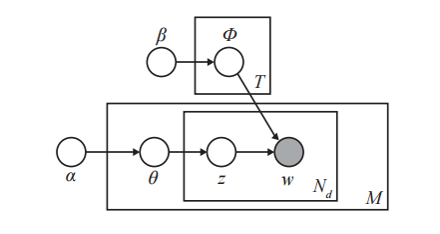
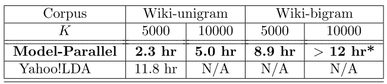

My name is Jim Oreluk. I am a 3rd year PhD student in Mechanical Engineering working in Michael Frenklach’s Combustion Laboratory. Contrary to the laboratory's name, we do not set fire to anything. My research is focused towards building predictive models for combustion systems. Specifically, I am working on optimization under uncertainty in a hydrogen combustion model. I also develop tools for a crowd-sourced database to promote collaborative science.
Outside of research I enjoy machine learning, data analysis, quantitative finance, and optimization. My daily programming for work is completed in MATLAB and my own side projects are written in Python. Through this course I am looking forward to rekindling my C/C++ knowledge and gain a better understanding of MPI. This course can also help me identify areas for parallelization in code, adopting various algorithms to achieve a speedup, and understand the theoretical lower bounds for these methods.
Latent Dirichlet Allocation
Latent Dirichlet Allocation (LDA) is perhaps the most common and simplest topic model currently in use and can be applied well beyond text-based problems. Topic modeling in general is a method which takes words from the original texts and uncover themes and connections between themes. A documents is a collection of words which may be as large as a book or as small as a portion of a chapter. A topic is a distribution over a fix vocabulary of words. A reader of any document will most likely find multiple topics to exist. Since each document can exhibit multiple topics, LDA tries to model this mixture of topics.
LDA has a competition between two objectives, the first objective is to look at each document and allocate its words to as few topics as possible. The second objective is for each topic to assign high probability to as few words as possible. These statements are competing with each other. To put a document in a single topic makes the second objective difficult since a document has many words, thus all the words must belong to that topic. Then if you were to put very few words in each topic, you have an issue with the first objective since you would be distributing the words of a document across many topics.

The figure above shows a graphical model for LDA. Each node represents a random variable. The shaded node, is an observed node for the words in the document, w. The hidden nodes (unshaded) are the topic assignments, proportions and the topics themselves.
Typically variational inference is used to estimate the parameters of the LDA and is a rich field of research in itself. Briefly, variational inference is trying to estimate an intractable posterior distribution over hidden variables with a simpler distribution containing free variational parameters [1].
Collapsed Gibbs sampling is an efficient procedure to sample the posterior distribution of topic assignments by integration out all the latent variables. The variance is reduced by sampling in this collapsed space, which makes CGS very efficient. For each document we will looking for a distribution of topics which relates to the document. The documents are independent so calculating the distribution of topics for a corpus (collection of documents) can be done in parallel by allocating a document for each processor, this is technique is called AD-LDA [2]. One of the main issues with this approach is memory allocation. Each topic will have its own topic-word count for each process, which can quickly become intractable.
The approach taken by Yan et al [3] was an algorithm which takes advantage of the sequential nature of Gibbs sampling to implement data streaming. This is in contrast to the implementation in AD-LDA which loads all the training data and model parameters into the device memory. Due to the limited amount of memory available for each processor on a GPU, AD-LDA is not feasible. The approach taken by Yan proves to circumvent the issues with loading the entire topic-word matrix for each process in memory. This is achieved by restricting the same word and same document to be accessed simultaneously across multiple processors. This restriction leads to no memory read/write conflicts in the document-topic and topic-word counts. By using this parallel algorithm (written in CUDA) with data streaming a more than 20x speedup was achieved compared to the single CPU. The work by Yan et al [3] showed that 1000 iterations of Gibbs sampling on the NYT dataset could be finished in 1.5 hours with the same perplexity as a 30-hour training on a single CPU. This approach appears to scale well when adding more processors.
One potential issue is when the model itself becomes large. A recent study was completed by Zheng et al [4] which looks at the inefficiencies of data-parallel approach and how large models require a new framework. The model-size is bounded by the smallest nodes RAM in a cluster. The solution proposed by Zheng is model-parallel inference. Model-parallel inference will train disjoint blocks of a large topic model in parallel. By incorporating techniques discussed above for data-parallelism, Zheng's results (Table below) shows a comparison between the model-parallel and Yahoo!LDA[5]. Model-parallel was able to handle data sizes and models which were far too large for the data-parallel methods discussed above.

[1] David M Blei and John D Lafferty. Topic models. Text mining: classification, clustering, and applications. 10(71):34, 2009.
[2] D. Newman, A. Asuncion, P. Smyth, and M. Welling. Distributed inference for latent Dirichlet allocation. In NIPS, 2007.
[3] F. Yan, N. Xu, Y. Qi. Parallel Inference for Latent Dirichlet Allocation on Graphics Processing Units. In NIPS, 2009.
[4] X. Zheng, J.K. Kim, Q. Ho, E.P. Xing. Model-Parallel Inference for Big Topic Models. arXiv: 1411.2305(2014)
[5] A. Ahmed, M. Aly, J. Gonzalez, S. Narayanamurthy, and A. Smola. Scalable Inference in Latent Variable Models, In International Conference on Web Search and Data Mining (WSDM), 2013.